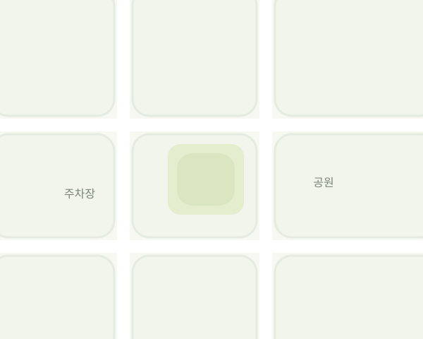

CAR · 주차기록
앱 UI 프로토타입
설정에서 클래식·스틸 포인트 디자인을 선택하고 층수 기록 흐름을 확인하세요.
주차한 지
2시간 13분센트럴 주차장
C구역 · 24번

PB2
주차 층수
B2로 예상돼요
주차 위치를
쉽게 기억하세요
차에서 내리면
주차 기록을 도와드려요
차량 선택 · 권한 확인 · 연결 테스트
설정
디자인 테마
바로 적용되고 다음 실행에도 유지돼요.
사이드바 위치
등록 차량
내 차량 Bluetooth 예시
자동 화면 표시
실제 앱에서는 권한과 감지 준비 상태를 확인합니다.
UI 데모 설정입니다. 휴대폰의 Bluetooth·권한 설정은 변경하지 않습니다.
1 / 3
처음 설정
내 차량을 선택하세요
설정 화면을 확인하는 데모입니다.